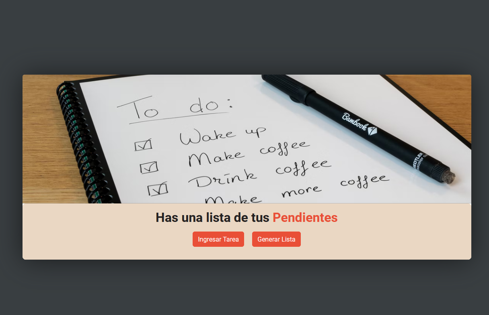
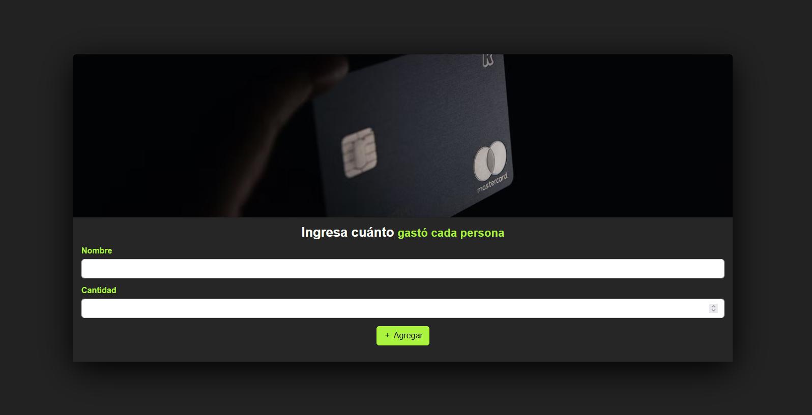
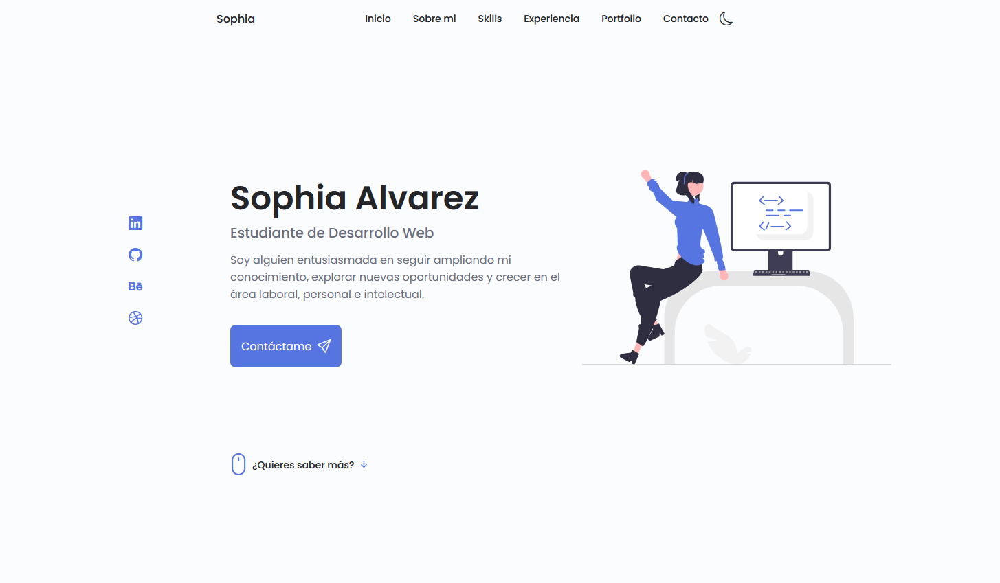
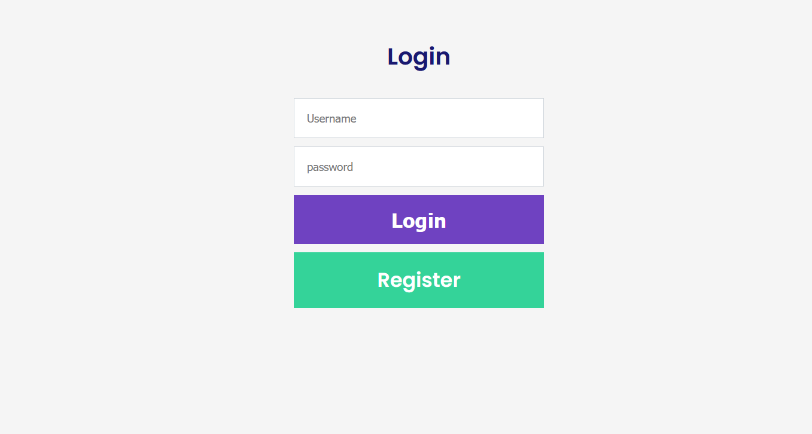
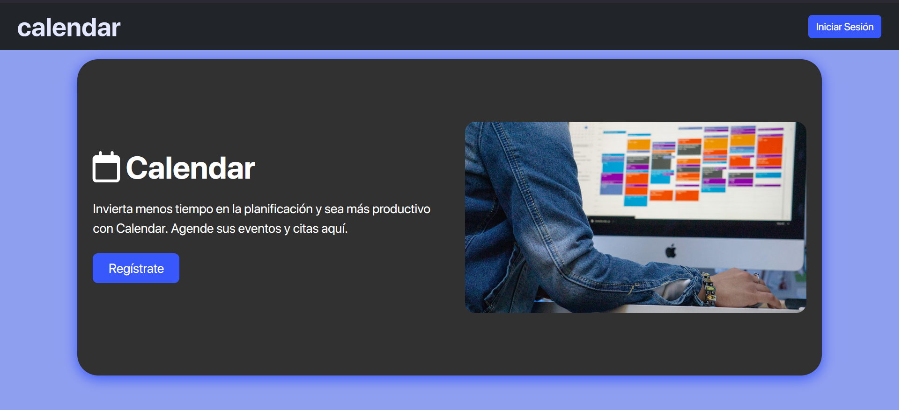

Challenge llevado a cabo en el programa ONE (Oracle Next Education).
Durante este reto debíamos construir un encriptador tal que al colocar texto en un textarea y apretar el boton "Encriptar" el mismo iba a ser encriptado a partir de una serie de reglas. También se debía poder copiar y desencriptar el texto.

To Do List
Reto realizado en el programa Talento Joven - ITBA. Como caso de estudio debíamos realizar una página que nos generara una lista de tareas a partir de las que el usuario ingresaba.

App de Gastos
Reto realizado en el programa Talento Joven - ITBA. Esta vez lo que se debía hacer era una página que a través de los montos ingresados por cada persona calculara el total a pagar y el promedio de cuánto se debería pagar por persona.

PortFolio
Challenge de la ruta de Frontend del programa ONE. El portfolio debía contener las secciones de Inicio, Sobre mí, Experiencia, Portfolio y Contacto. El formulario de contacto debía tener validación para los datos ingresados por el usuario.

Login
Práctica con NodeJs. En este proyecto me dispuse a aprender cómo podría realizar un login. Utilicé un motor de plantillas ejs para poder realizar el proyecto con mayor facilidad.

Calendario
Práctica de Backend con Node Js. Es un calendario donde el usuario debe poder logearse, registrarse, agregar y editar eventos.